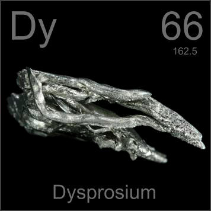

HOME
PREVIOUS
NEXT

Dysprosium
Atomic Weight: 162.5
Density: 8.551 g/cm3
Melting Point: 1412 °C
Boiling Point: 2567 °C
Dysprosium compounds are used in the coatings of many hard disk drives to record digital data as field orientations in nanoscale magnetic domains. Other than that, dysprosium has few applications.